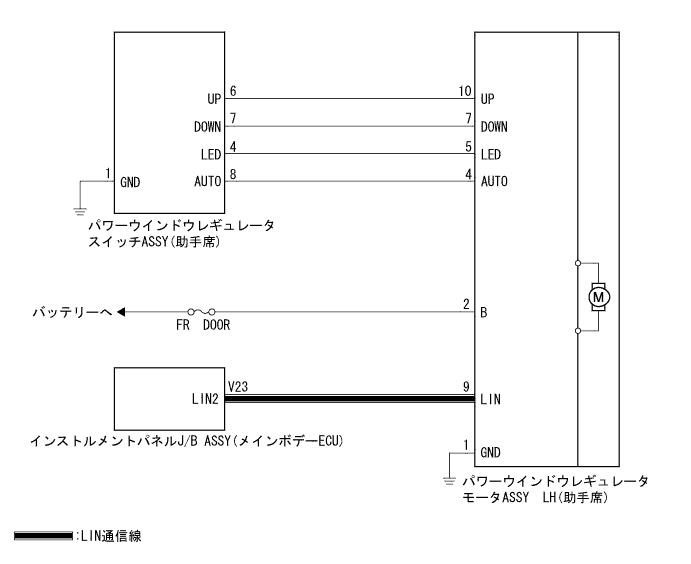
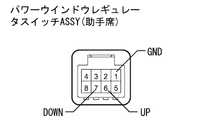
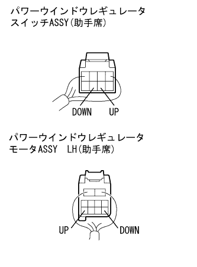
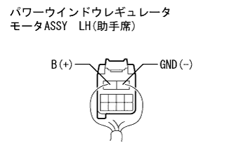

Power Window System Window Cannot Be Operated with Regulator Switch of Each Seat |
)
| Step 1 | Perform TaSCAN Active Test |
Active Test
Using SST (TaSCAN), perform the Active Test of the power window regulator motor assembly LH (front passenger side). (see)
| Item Name | Drive |
|---|---|
| Power Window | Up/Down |
|
| ||||
| OK | |
| Step 2 | Read TaSCAN Data |
Data Monitor
Using SST (TaSCAN), read the data on the status when the power window regulator motor assembly LH (front passenger side) is operated.
| Item Name [Symbol] | Item Description/Display Range | Standard Value | Remarks |
|---|---|---|---|
| P-Seat P/W UP SW [PPAU] | Front passenger side switch UP operation signal/Display range: OFF - ON | ON: UP switch operating OFF: Neutral | - |
| P-Seat P/W DOWN SW [PPAD] | Front passenger side switch DOWN operation signal/Display range: OFF - ON | ON: DOWN switch operating OFF: Neutral | - |
|
| ||||
| OK | ||
| ||
| Step 3 | Inspect Power Window Regulator Switch Assembly (Front Passenger Side) |
 |
Disconnect the power window regulator switch assembly (front passenger side) connector.
Using SST (Toyota electrical tester), measure the resistance between the terminals of the power window regulator switch assembly (front passenger side).
| Tester Connection (Terminal Symbol) | Condition | Standard |
|---|---|---|
| 6(UP) - 1(GND) | UP (manual operation) | Below 1 Ω |
| 7(DOWN) - 1(GND) | DOWN (manual operation) | Below 1 Ω |
|
| ||||
| OK | |
| Step 4 | Inspect Wire Harness and Connector (Power Window Regulator Switch Assembly (Front Passenger Side) - Power Window Regulator Motor Assembly LH (Front Passenger Side)) |
 |
Disconnect the power window regulator switch assembly (front passenger side) and power window regulator motor assembly LH (front passenger side) connectors.
Using SST (Toyota electrical tester), measure the resistance between the terminals of the power window regulator switch assembly (front passenger side) and power window regulator motor assembly LH (front passenger side) vehicle side wire harness connectors.
| Tester Connection (Terminal Symbol) | Condition | Standard |
|---|---|---|
| 6(UP) - 10(UP) | Always | Below 1 Ω |
| 7(DOWN) - 7(DOWN) | Always | Below 1 Ω |
|
| ||||
| OK | |
| Step 5 | Inspect Wire Harness and Connector (Motor Input Power Source) |
 |
Disconnect the power window regulator motor assembly LH (front passenger side) connector.
Using SST (Toyota electrical tester), measure the voltage between the terminals of the power window regulator motor assembly LH (front passenger side) vehicle side wire harness connector.
| Tester Connection (Terminal Symbol) | Condition | Standard |
|---|---|---|
| 2(B) - 1(GND) | IG ON | 11 to 14 V |
|
| ||||
| OK | ||
| ||